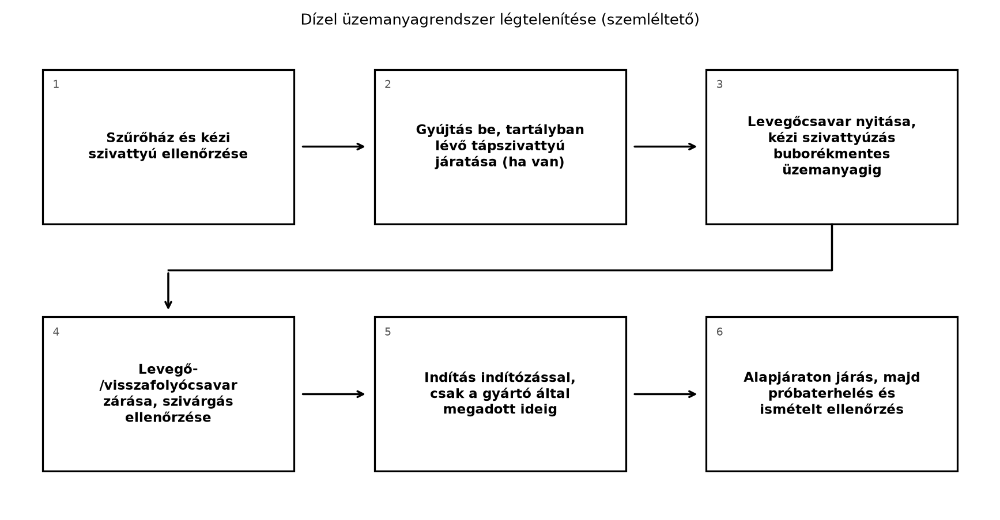

A műhelyben gyakran érkezik olyan jármű, amelynek ügyfélpanasza látszólag egymástól független: az olajnyomás-visszajelző lámpa felvillan alapjáraton, a motor hűtőfolyadékot fogyaszt, hideg időben a dízel nehezen indul, vagy bemelegedés után rángat, füstöl. A háttérben rendszerint a kenő-, a hűtő- vagy a tüzelőanyag-rendszer hibája áll. Ilyenkor a hibakód-kiolvasás önmagában ritkán ad teljes megoldást: a diagnosztikához nyomásmérés, tömítettségi próba, áramlásvizsgálat és a gyártói javítási utasítás szerinti bontás, előírt szerszámozás és ellenőrzés szükséges. Ez az alfejezet a motorkörüli folyadékrendszerek gyakorlati javítását tanítja, a Motor kenése, olajszűrés, olajhűtés és a levegő- és tüzelőanyag-szűrők, a Motor hűtése és a Közös nyomásterű (common rail) dízelbefecskendezés alfejezetekben megszerzett ismeretekre építve.
Képzeljünk el egy emelőn álló, rögzített járművet a tanműhelyben. A motor alatt olajfelfogó kád, a hűtőrendszer kiegyenlítőtartályán nyomáspróbázó kéziszivattyú és manométer, a mérőkocsiban mechanikus olajnyomásmérő, dízel kézi légtelenítő szivattyú, injektor-célszerszám és izzítógyertya-csavarhúzó készlet. A szerelő a gyártói javítási kézikönyv adatait ellenőrzi, mielőtt egy csavart is meglazítana. Az alábbi folyamatábra a dízel üzemanyagrendszer légtelenítésének fontos lépéseit mutatja, amelyet a gyakorlati útmutatóban részletezünk.

Definíció. A dinamikus olajnyomás a motor üzemi hőmérsékletén, meghatározott fordulatszámokon mért olajnyomás. A statikus méréssel szemben a csapágyhézagok, a szivattyú és a nyomásszabályozás teher alatti állapotát jellemzi.
Definíció. A hűtőrendszer próbanyomása az a vizsgálati nyomás, amelyet hideg hűtőkörön, a kiegyenlítőtartály vagy a zárósapka leszerelése után adunk a rendszerre, hogy a tömítettséget ellenőrizzük.
Definíció. A légtelenítés a tüzelőanyagrendszerből a levegő, gőz vagy gázbuborékok eltávolítása; a levegő jelenléte a gyakorlatban nehéz indítást, egyenetlen járást és a befecskendezőrendszer károsodását okozhatja.
Összefüggés. A nyomásváltozás értékelése a folyadékrendszer-tömítettségnél: ahol a próbaidő alatti nyomásesés, a felnyomott kezdő nyomás, a próbaidő végén mért nyomás. Az egység bar vagy kPa: . A nyomásesést a gyártói vagy az eljárási határral hasonlítjuk össze.
Szabály. A motor hűtő- és kenőrendszerének vizsgálata előtt a motornak hidegnek vagy legfeljebb kézmelegnek kell lennie, ha a hűtőrendszert nyitjuk; az olajnyomás-mérés viszont üzemi hőmérsékleten, a gyártó fordulatszám-előírásaival történik.
Előírás. A nagynyomású, például common rail dízelrendszeren a munkákat csak a rendszer nyomásmentesítése után, a gyártói javítási utasítás lépései szerint szabad végezni. A nyomás alatt lévő üzemanyagsugár bőrbe hatolva súlyos, maradandó sérülést okoz. (Ellenőrizendő: a gyártó által előírt nyomásmentesítési mód és várakozási idő.)
Az olajszivattyút leggyakrabban fogaskerekes vagy rotoros kivitelben építik be; korszerű motorokon változó térfogatáramú, szabályozott szivattyú is előfordul. A szivattyú le- és felszereléséhez általában az olajteknőt kell leereszteni és leszerelni; a szivattyút lánc, fogaskerék vagy közvetlen hajtás kapcsolja a motorhoz. Ellenőrzés: foghézag, a fogaskerék és a ház közötti radiális játék, a ház belső felületének karcosodása, a szívócső tömítettsége és a hajtóelem kopása. A gyártói szerelési előírás szerint új tömítéseket és adott esetben új hajtócsavart kell beépíteni. Megjegyzés. A szivattyú szívóoldalán beszívott levegő habzást, nyomáslengést és elégtelen kenést okoz; a hibát gyakran a szívócső repedése vagy a rosszul tömítő olajszűrő-adaptáció okozza.
A nyomáshatároló szelep rugós dugattyúja a kenőrendszer nyomását korlátozza. Ha a dugattyú nyitva ragad, a nyomás alacsony marad; ha szorul, a nyomás túlzottan megnőhet. Ellenőrzés: a szelep szétszerelése, rugóhossz, rugóerő, karcmentes mozgás a furatban.
Az olajszűrőt a gyártó előírása szerint cseréljük; a csere előtt a tömítőfelületet meg kell tisztítani, az új tömítést vékony olajfilmmel kell bekenni, és a rögzítést csak kézzel vagy a megadott nyomatékkal szabad meghúzni. A szűrőházon lévő megkerülő és visszafolyás-gátló szelepek meghibásodása hidegindítási kopogáshoz és lassú nyomásfelépüléshez vezet.
Az olajnyomás-kapcsoló általában alaphelyzetben záró érintkező, amely a megengedett minimális nyomás alatt a lámpát földeli. Az olajnyomás-jeladó lineáris, feszültség- vagy áramjelet ad a motorvezérlőnek; ellenőrzése multiméterrel vagy diagnosztikai műszerrel, a gyártó kapcsolási pontjai alapján történik. A dinamikus olajnyomás-mérésnél a kapcsoló vagy jeladó helyére mechanikus mérőórát kötünk, a motort üzemi hőmérsékletre melegítjük, és a gyártó által előírt fordulatszámokon mérünk. A kapott értéket a motor hőmérséklete és az olaj viszkozitása is befolyásolja. Jellemző hibák: hígult olaj, kopott fő- és hajtókarcsapágy, kopott szivattyú, ragadt nyomáshatároló, eltömődött szűrő vagy szívószál.
A termosztát ellenőrzése leggyakrabban meleg vizes edényben, hőmérővel végzett nyitási próbával történik; a nyitási kezdet és a teljes nyitási hőfok a gyártó adata. A fűtött termosztátnál a fűtőellenállást és a vezérlőjelet is ellenőrizni kell. A vízszivattyú hibájára utal a csapágyzaj, a tengelyjáték, a tömítőgyűrű szivárgása vagy a járókerék kopása. A szivattyú cseréje gyakran együtt jár a vezérműszíj vagy a segédberendezés-szíj cseréjével, ezért a munkát a gyártói csomag szerint kell végezni. A hűtő belső eltömődése csökkenti a hőátadást, a külső bordasérülés pedig a légáramot rontja. A ventilátorok közül a viszko-kuplungos ventilátor meleg motornál a fordulatszám növekedésével együtt kapcsolódik; az elektromos ventilátor a relé, a hőmérsékletkapcsoló, a ventilátormotor, a biztosíték és a vezérlőegység áramútján keresztül ellenőrizhető. A hidraulikus ventilátorok a szervoszivattyú-nyomással hajtanak; itt a nyomáscsökkentő szelepet és a tömítettséget kell mérni.
A hűtőkör tömítettségi nyomáspróbáját hideg rendszeren végezzük: a kiegyenlítőtartály zárósapkáját leszereljük, a nyomáspróbázó készüléket feltöltjük hűtőfolyadékkal, és a rendszerre a gyártó által megadott próbanyomást adjuk. A nyomást a próbaidő alatt figyeljük; ha a nyomás gyorsan esik, szivárgási helyet kell keresni. Ha hideg rendszeren a nyomás külső szivárgás nélkül esik, belső szivárgás gyanítható (fűtőradiátor, hengerfejtömítés a henger vagy az olajtér felé). Égésgáz-bejutás gyanújakor a nyomáspróbázót járó motornál figyeljük: ha a nyomás a próbanyomás fölé emelkedik, vagy a mutató a motor ütemével lüktet, és a kiegyenlítőtartályban a CO-teszt (vagy szénhidrogén-jelenlét-vizsgálat) pozitív, a hengerfejtömítés hibás. Megjegyzés. A hibás zárósapka nem tartja a rendszer nyomását, és forráspontcsökkenést vagy folyadékvesztést okoz.
Az alábbi képsor a nyomáspróba fogásait mutatja: (1) a sapkát csak hideg motoron, lassan nyitjuk; (2) a sapka helyére a nyomáspróbázó adaptere kerül; (3) a próbanyomásig pumpálunk, és a manométert figyeljük – a jellemző szivárgási pontok a tömlőbilincsek, a hűtő, a vízpumpa, a tartályban megjelenő buborék pedig hengerfejtömítés-hibára utal; (4) a zárósapkát külön adapterrel vizsgáljuk. A HTML-változatban a 3. lépés „tömör” és „szivárog” állapota is megnézhető.
Az elektromos tüzelőanyag-szivattyú ellenőrzése több lépésből áll: a relé és a biztosíték ellenőrzése, a tartályban lévő szivattyú nyomás- és szállítási próbája. A rendszer típusától függően a szivattyú egy beépített nyomásszabályozóval vagy a befecskendezési elosztócsőnél lévő visszafolyó ági szabályozóval dolgozik. Jellemző értékek: az MPI-rendszerek mérőnyomása például – (ellenőrizendő); a közvetlen befecskendezésű Otto-motorok esetében a nyomást a diagnosztikai műszeren keresztül, a nagynyomású érzékelő jeléből követjük. A befecskendezési nyomás mérése az elosztócsőre csatlakoztatott mérőműszerrel történik; a zárási nyomás hosszabb idő utáni fenntartása az injektorok tömítettségét is jellemzi. A karburátoros rendszereknél a szintellenőrzés, az úszószint, az alapjárat- és CO-beállítás, valamint a fúvókák tisztítása a feladat; ez régi járművön fordul elő.
Az injektorok vizsgálata magában foglalja az elektromos tekercs ellenállásának, a permetképének, a csepegésének és az egyenlő szállítási mennyiségnek az ellenőrzését. A beszabályozás után a motorvezérlő adaptációs értékei és a lambdaszonda jele igazolja a keverékképzés helyességét. A benzinnyomást, a szivattyú áramfelvételét és a szivárgást mindig a gyártói javítási adatokkal hasonlítjuk össze.
A dízel tüzelőanyag-szűrő cseréjekor a szűrőházat, a vízleválasztót és az előmelegítő elemet is ellenőrizni kell; a szűrőcsere után a rendszert a gyártói módon légtelenítjük. A légtelenítés klasszikus módszere a kézi szivattyús szűrőfedél vagy a befecskendezőszivattyún lévő levegőcsavar; modern rendszerekben az elektromos tápszivattyú a gyújtás ráadásakor önlégtelenítést végez. A common rail rendszereken a nagynyomású oldalt tilos megnyitni a nyomásmentesítés előtt; a légtelenítés a kisnyomású oldalon, a szűrőnél vagy a gyártó által megadott visszafolyó ágon történik.
Az izzítógyertyák ellenőrzése történhet ellenállásméréssel, áramfelvételi próbával vagy a diagnosztikai műszer izzítási adatainak megfigyelésével. A csere előtt a hengerfej furatát és a menetet át kell nézni; a gyertyát megfelelő nyomatékkal, a gyártói kenőanyaggal vagy szárazon kell beszerelni. A törékeny izzócsúcs letörése esetén a motort nem szabad indítani, amíg a törmeléket el nem távolították.
A hagyományos, soros vagy elosztós adagolós motoroknál a porlasztók nyitási nyomása, permetképzése és csepegése mérőpadon ellenőrizhető. A szállításkezdet beállítását a gyártói jelölésekhez képest mérőórával vagy a befecskendező csőre csatlakoztatott érzékelővel végezzük. A common rail, PDE és radiáldugattyús adagoló rendszerekben a nyomásszabályozó- és mennyiségszabályozó-szelepek, a rail-nyomásérzékelő, a magasnyomású szivattyú és az injektor visszafolyási mennyisége a fő diagnosztikai pontok. A CR-injektorok cseréjekor rögzíteni kell az injektor kalibrációs kódját a motorvezérlőben; ellenkező esetben az adagolási pontosság romlik.
A katalizátor belső állapotát a be- és kilépő hőmérsékletkülönbséggel, a nyomáseséssel vagy a lambdaszonda szabályozási jellemzőivel ellenőrizhetjük. A lambdaszonda fűtőellenállása, jelválasza és reakcióideje a diagnosztikai vagy oszcilloszkópos vizsgálat része. A EGR-szelep kormozódás miatt letapadhat; tisztítás után a motorvezérlőben az EGR-adaptációt a gyártó előírása szerint újra kell tanítani. A turbófeltöltő tengelyirányú és radiális játéka, olajszivárgása, a wastegate- vagy változó geometriájú szabályozó működése és a töltőnyomás-értékek ellenőrzésével együtt adja a teljes képet.
Példa 1: dinamikus olajnyomás-mérés.
Adott: meleg motor, hűtőfolyadék-hőmérséklet
,
alapjárati fordulatszám
;
mechanikus mérővel mért nyomás
,
majd
fordulaton
.
A gyártói példaadat szerint alapjáraton legalább
,
-en
–
szükséges.
Keresett: megfelel-e a motor, és mennyi a nyomás kPa-ban?
Megoldás:
Az alapjárati érték
,
a
-es
érték
,
tehát a mérés a példaértékek szerint megfelel. ∎
Példa 2: hűtőrendszer nyomáspróbája.
Adott: hideg hűtőrendszer, a gyártói próbanyomás példaadatként
;
a nyomáspróbázóval felnyomott kezdeti nyomás
,
majd
elteltével mért nyomás
.
A megengedett esés
a próbaidő alatt.
Keresett: a nyomásesés és a minősítés.
Megoldás:
Mivel
,
a rendszer a példaértékek szerint tömör; a nyomásesésből nem látszik
jelentős külső szivárgás. ∎
Példa 3: benzin-leállási nyomás.
Adott: elektronikus MPI-rendszer, kulcs bekapcsolása után a szivattyú
előfut, a mérőnyomás
;
majd
múlva
.
A gyártói példaadat szerint az üzemi nyomás
,
a
utáni zárási nyomáspont legalább
.
Keresett: elfogadható-e a rendszer?
Megoldás: az üzemi nyomás
a
–
tartományban van, a zárási nyomás
.
A példa szerint elfogadható, de ha a nyomás gyorsan esne, az injektor
vagy a visszafolyó ági szabályozó szivárgását kellene keresni. ∎
A munka befejezése előtt a gyártói adatokhoz viszonyítva ellenőrizzük az alábbiakat:
| Vizsgált elem | Módszer, műszer | Példaérték | Értékelés |
|---|---|---|---|
| Dinamikus olajnyomás | mechanikus mérőóra, meleg motor | alapjárat –; – | híg olaj, kopott szivattyú/csapágy gyanúja alacsony értéknél |
| Hűtőkör tömítettség | nyomáspróbázó | –; esés max. | szivárgáskeresés, CO-teszt |
| Hűtőfolyadék fagyáspont | refraktométer | % glikol mellett kb. | téli üzemben legalább alatt |
| Benzin üzemi nyomás | nyomásmérő | MPI | szivattyú-, szabályozó-, injektorhiba |
| Dízel szűrő/légtelenítés | kézi szivattyú, gyártói menet | buborékmentes, ellenállást adó szivattyúzás | levegős rendszer indítási nehézséget okoz |
| Izzítógyertya ellenállás | ohmmérő | – | szakadt vagy zárlatos gyertya |
| Lambdaszonda jel | oszcilloszkóp/diagnosztika | – periodikus váltakozás | öreg, lassú szonda |
| Turbófeltöltő tengelyjáték | mérőműszer, kézi ellenőrzés | radiális játék max. a gyártó szerint | kopott csapágy, szivattyúkár |
Az értékek tanulási példák (ellenőrizendő: gyártói adat / hatályos előírás). A mérés befejezése után a motorvezérlő hibakódjait töröljük, és a lehető legrövidebb próbautat vagy üzemi járatást végezzük, hogy a rendszer readiness-vizsgálata és az adaptáció lefusson.
Egy 1,9 literes, elosztós adagolós dízelmotoros autó tulajdonosa azt panaszolja, hogy a motor hidegben több másodpercig indítózik, és az első percben csonkán jár. A javítási munkalapon először a hidegindítási rendszert és a tüzelőanyag-rendszert vizsgáljuk.
Tünet: hideg motornál hosszú indítózás, fehér füst,
erős gázolajszag.
Első hipotézis: az izzítógyertyák egy része hibás vagy
gyenge, a befecskendezési szállításkezdet késik, esetleg levegős a
rendszer.
Mérések: az izzítógyertyák ellenállása
,
,
és
;
a negyedik gyertya ellenállása erősen megnőtt (hibás, kiégőben lévő
gyertya; szakadásnál a műszer OL-t mutatna). A szűrőháznál a kézi
szivattyúzás kezdetben puha, majd buborékos üzemanyag jön, ami enyhe
levegősségre utal. A szivattyúzás után az indítás javul, de az elosztós
adagolós motor teljesítménye hidegen még gyenge; a szállításkezdetet
mérőórával ellenőriztük, az a gyártói tűrésen belül volt (ellenőrizendő:
gyártói adat). Ok: két hiba együtt – hibás
izzítógyertya és a szűrőnél beszívott levegő. Javítás:
izzítógyertya-csere a gyártó nyomatékával, az előírt kenőanyaggal; a
szűrőház tömítésének és a szívócső bilincsének javítása, a teljes
tüzelőanyag-rendszer gyártó szerinti légtelenítése.
Ellenőrzés: hideg motoron a gyertyák izzítási
áramfelvétele egyenletes, a motor
–
másodpercen belül indul, alapjárat stabil, a fehér füst eltűnik. A
tanulság: hidegindítási panasznál a dízelrendszer légtelenítését és az
izzítógyertyákat együtt kell ellenőrizni, nem csak a gyertyákat
cserélni.
Munkalap: Kenő-, hűtő- és dízel tüzelőanyag-rendszer ellenőrzése és javítása
Cél: a motor kenő- és hűtőrendszerének diagnosztikai ellenőrzése, a dízel tüzelőanyag-rendszer légtelenítése, izzítógyertya-csere és adott esetben injektorcsere a gyártó szerint.
Jármű- és adatazonosítás: rendszám, alvázszám, motorszám, a gyártói javítási adatbázis verziója, a folyadékok specifikációja (olaj, hűtőfolyadék, gázolaj minőség) és a meghúzási nyomatékok listája.
Szükséges szerszámok, célszerszámok és mérőeszközök: emelő és alátámasztó bak, záródugó-készlet, olajnyomásmérő, hűtőrendszer-nyomáspróbázó, refraktométer, multiméter, nyomatékkulcs, nyomásmérő, kézi légtelenítő szivattyú vagy gyári tápszivattyú-tesztelő, izzítógyertya-célszerszám, injektor-célszerszám, visszafolyásmérő készlet, gyűjtőedények.
Anyagok: gyártói előírás szerinti olaj, hűtőfolyadék, tömítések, szűrők, izzítógyertyák, injektor-tömítőgyűrűk, kenőanyag.
Biztonsági korlát. A feladat tanműhelyi környezetre, oktató felügyeletére és a gyártói javítási utasítás betartására vonatkozik; a megadott értékek tanulási példák. A járművet emelőn, a gyártói emelési pontokon, és bakkal biztosítva kell alátámasztani; csak kocsiemelővel tartott jármű alá bemenni tilos.
Figyelem. Zárt térben a motort csak kipufogógáz-elszívással szabad járatni. A kipufogógáz szén-monoxidot és egyéb mérgező anyagokat tartalmaz. A benzint és a gázolajat nyílt lángtól, forró felülettől és szikrától távol kell tartani. A common rail rendszer nagynyomású oldalát tilos a nyomásmentesítés előtt bontani. A hűtőrendszert forró motoron nem nyitjuk; a zárósapkát hagyni kell előbb lehűlni.
Környezetvédelem. A fáradt olajat, hűtőfolyadékot, üzemanyagot, szűrőket, tömítéseket és az izzítógyertyákat munkahelyi gyűjtőbe, veszélyes hulladékként kell kezelni, a hulladékos nyilvántartás szerint. A hűtőfolyadékot nem szabad a csatornába engedni; a szennyezett törlőrongyot külön, zárható edényben gyűjtjük. (Ellenőrizendő: a veszélyes hulladékokra vonatkozó hatályos rendeletek és a hulladékkezelési gyakorlat.)
Munkalépések:
Dokumentálás: a munkalapon rögzítsd a mérési eredményeket, a beépített alkatrészeket, a folyadékok típusát, a meghúzási nyomatékokat és a kalibrációs kódokat; a jármű szervizkönyvében a karbantartást a gyártói előírás szerint igazold.
Kiemelt eljárás: dízelrendszer légtelenítése
Tipikus hibák a gyakorlatban: a gyújtás bekapcsolása nélkül indítózás, a levegőcsavar nyitva felejtése, a szűrőház tömítésének elhagyása, a common rail nyomásmentesítés elmulasztása.
Hiba. Hideg motornál mérik az olajnyomást, mert így gyorsabb a mérés. A hideg olaj viszkozitása nagy, ezért az érték irreálisan magas, és a kopott csapágyak hibája rejtve marad. Helyes gyakorlat: a mérés előtt a motort üzemi hőmérsékletre melegítjük, és a gyártói fordulatszámokon mérünk.
Hiba. A common rail rendszer nagynyomású csövét a motor leállítása után azonnal, nyomásmentesítés nélkül lazítják meg, mert „a motor úgysem jár”. A rendszerben visszamaradt akár több száz bar nyomású üzemanyagsugár bőrbe hatolva súlyos, maradandó sérülést okoz. Helyes gyakorlat: a gyártói nyomásmentesítési eljárást követjük, és a nagynyomású szerelvényeket csak ezután bontjuk.
Hiba. A hűtőrendszer zárósapkáját forró motornál nyitják fel, mert a szintet sürgősen ellenőrizni akarják. A túlnyomás alatt kiáramló forró hűtőfolyadék leforrázást okoz. Helyes gyakorlat: a motort lehűlni hagyjuk, vastag ronggyal, fokozatosan engedjük le a nyomást.
Hiba. A dízel járművet a légtelenítés során hosszan indítóztatják, mert „legalább átmossa a rendszert”. Az önindító túlmelegszik, a befecskendezőrendszer kenése rossz lehet, és a sikertelen indítás a hibát elfedi. Helyes gyakorlat: rövid indítási ciklusok, a légtelenítést a gyártói módszerrel, kézi szivattyúval vagy tápszivattyúval végezzük.
Hiba. A hűtőrendszert csapvízzel töltik fel, mert „az olcsóbb”. A csapvíz vízkövet, rozsdát és fagyáskárosodást okoz; a glikolos hűtőfolyadék korróziógátló és fagyvédő adalékai nélkül a motor hűtőrendszere károsodik. Helyes gyakorlat: a gyártó specifikációja szerinti, megfelelő keverési arányú hűtőfolyadékot használunk.
1. feladat (A). Egy mechanikus olajnyomásmérő alapjáraton -t, -en -t mutat. A példaértékek szerint az alapjárati minimum , a -hez tartozó tartomány –. Feleljen meg a motor? Válaszát kPa-ban is adja meg.
2. feladat (A). A hűtőrendszer próbanyomása , a próbaidő végén . A megengedett esés . Minősítse a mérést.
3. feladat (B). Egy MPI-befecskendezésű benzinmotor leállítása után a nyomás -ról alatt -ra csökken. A példaértékek szerint az üzemi nyomás , a zárási nyomáspont legalább . Milyen hibát gyanít, és mit mérne először?
4. feladat (B). Rendezze helyes sorrendbe a dízel common rail rendszer injektorcseréjének fő lépéseit: (a) kalibrációs kód rögzítése a vezérlőben, (b) nyomásmentesítés, (c) motor leállítása, kulcselvétel, (d) injektor kiszerelése, (e) új tömítések behelyezése és visszaszerelés, (f) visszafolyásmérés. Indokolja a sorrendet.
5. feladat (C). Egy hűtőkör nyomáspróbája során hideg rendszeren a nyomás -ra felnyomva alatt -ra csökken, de külső szivárgás sehol sem látható. Milyen további vizsgálatokat végezne, és mi lehet a hiba?
6. feladat (D). Egy dízelmotor hidegben nehezen indul, alapjáraton fehér füstöt ereszt. A diagnosztika szerint az izzítási idő normális, az akkumulátor feszültsége indítás közben, a szűrőházban a kézi szivattyúzás buborékos üzemanyagot hoz. Ismertesse a hibakeresés lépéseit, a várható okot és a javítást.
Önellenőrzés – válaszok
1. feladat (A). A motor megfelel, mert és . Átszámítás: , .
2. feladat (A). . Mivel , a példaérték szerint a hűtőkör megfelel.
3. feladat (B). A zárási nyomás , ami a határ alatt van; az injektor vagy a visszafolyó ági szabályozó szivárgását, esetleg a tüzelőanyag-szivattyú visszacsapó szelepének hibáját kell gyanítani. Először a nyomásmérővel a zárási nyomást, majd a visszafolyó ág tömítettségét és az injektorok csepegését ellenőriznénk.
4. feladat (B). Helyes sorrend: (f) visszafolyásmérés a hibás injektor azonosítására (járó motornál, a gyártó szerint); (c) motor leállítása, kulcselvétel; (b) nyomásmentesítés; (d) injektor kiszerelése; (e) új tömítések behelyezése és visszaszerelés előírt nyomatékkal (új nagynyomású cső, ha a gyártó előírja); (a) kalibrációs kód rögzítése a vezérlőben; végül légtelenítés és szivárgásellenőrzés járó motornál. A visszafolyásmérés diagnosztikai lépés: a hibás injektort a nyomás alatt álló, működő rendszeren kell kiválasztani, a leállítás és nyomásmentesítés után már nem végezhető el. A nyomásmentesítés nélküli bontás életveszélyes, a kód elhagyása pedig befecskendezési pontatlanságot okoz.
5. feladat (C). A gyors nyomásesés és külső szivárgás hiánya rejtett szivárgásra utalhat: a fűtőradiátor, a vízszivattyú-tömítés, a hengerfejtömítés meghibásodása, esetleg a motortérben lévő hűtőfolyadék-nyom nélküli égésgáz-bejutás. Továbbá ellenőrizzük a zárósapkát és a kiegyenlítőtartály repedéseit. Ha járó motornál a nyomás emelkedik, vagy a CO-teszt pozitív, a hengerfejtömítés hibája valószínű; hideg rendszeren, külső szivárgás nélkül eső nyomásnál belső szivárgás (fűtőradiátor, hengerfejtömítés) gyanítható. A javítás a motor gyártói előírás szerinti szétszerelését és a tömítés cseréjét igényli.
6. feladat (D). A tünet hidegindítási nehézség, fehér füst; az indítás közbeni feszültség elfogadható, az izzítási idő normális, de a szűrőház buborékos üzemanyagot ad. A hiba a tüzelőanyagrendszer levegőssége. Hibakeresési sorrend: a szűrőház, a kézi szivattyú, a tüzelőanyag-szívócső és a csatlakozók ellenőrzése; a szűrőcsere; a szűrőház tömítésének cseréje; a rendszer kézi szivattyús légtelenítése buborékmentes üzemanyagig; majd rövid indítózás. Ha a motor továbbra is füstöl, az izzítógyertyák és a szállításkezdet ellenőrzése következik. A javítás a levegőbeszívás megszüntetése és légtelenítés; az önindítót rövid ciklusokban terheljük.
A kenőrendszer javításakor az olajszivattyút, a nyomáshatárolót, a szűrőt, a nyomáskapcsolót vagy -jeladót és a dinamikus olajnyomást egyaránt ellenőrizni kell. A hűtőrendszer vizsgálata a termosztátra, a vízszivattyúra, a hűtőre, a ventilátorokra és a tömítettségre terjed ki; a nyomáspróba hideg rendszeren, a gyártói próbanyomással történik. A tüzelőanyag-rendszerek közül a benzinoldalon a szivattyúnyomás, a zárási nyomás, a szabályozó és az injektorok tömítettsége, dízelen a szűrő, a légtelenítés, az izzítógyertyák és a befecskendezőrendszer működése a fő elem. A common rail rendszert kizárólag a nyomásmentesítés után szabad bontani. A kipufogóoldalon a katalizátor, a lambdaszonda, az EGR-szelep és a turbófeltöltő ellenőrzése zárja a diagnosztikát.
Továbbvitt eredmény. A kenő-, hűtő- és tüzelőanyag-rendszer javítási módszerei, a nyomásmérés, a tömítettségpróba és a légtelenítés lépései a Gyakorlati vizsgafelkészülés: komplex hibakeresési és szerelési feladatok alfejezetben a több rendszerre kiterjedő, összetett hibakeresési feladatok alapját adják.